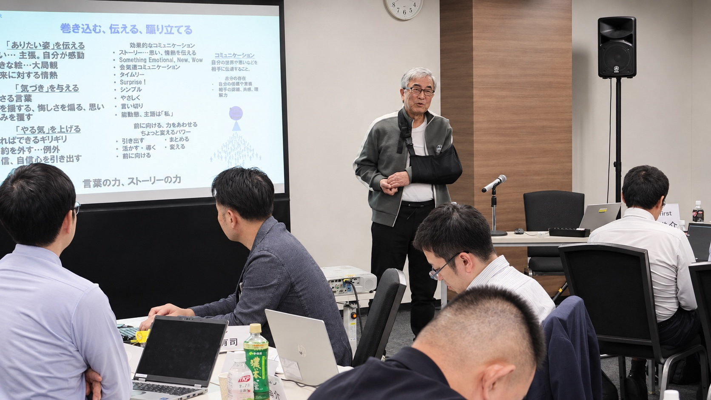

OBSERVE SCOPE
今回ご見学いただけるのは、
2日目午前のCEOプレゼンテーションのみです。
1日目のリハーサル・発表、2日目午後の総評・修了行事などは見学対象に含まれません。
WHY OBSERVE
知識を語るのではなく、
自らの経営観を言葉にする。
参加者一人ひとりが、経営者として我が社をどうしたいのか、自らはどうあるべきかを「自身の経営所信表明」として語ります。
オブザーブでは、そのうち2日目午前の発表を通じ、8か月の学びがどのように経営者としての言葉へ結実するのかをご確認いただけます。

この単位で向き合う3つの問い
我が社をどうするか
経営者として、我が社をどうしたいのか。未来に向けた意思を明確にします。
何を信じて経営するか
企業経営における自らの経営観と信念を、自分自身の言葉で捉えます。
どうあるべきか
経営者としての自分はどうあるべきか、どうありたいかを表明します。
オブザーブ対象
- 3月5日 午前
- 自身の経営所信表明（CEOプレゼンテーション）
第9単位2日目・午前の発表のみ
開催概要
- 見学日時
- 2027年3月5日（金）午前
- 会場
- 最終調整中
- 見学範囲
- CEOプレゼンテーション午前の部のみ
- 参加費
- 無料
- 主催
- 一般社団法人日本能率協会
本オブザーブは上記の時間帯のみが対象です。1日目および2日目午後のプログラムはご見学いただけません。会場、開始時間、定員、申込締切などの詳細は申込ページでご確認ください。